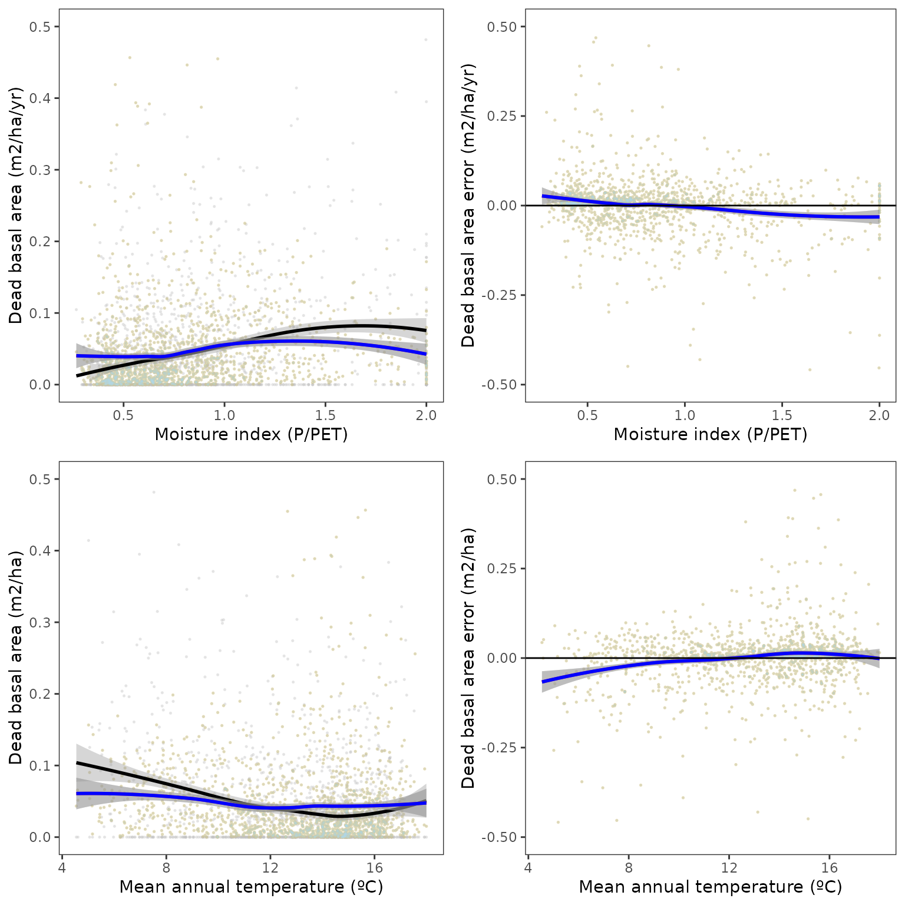

Evaluation of regional-level forest dynamics with forest inventory data
Miquel De Cáceres
2022-03-15
Source:vignettes/evaluation/RegionalLevelEvaluation.Rmd
RegionalLevelEvaluation.RmdIntroduction
Goal
The aim of this article is to provide an assessment of the performance of fordyn for the prediction of forest dynamics in Catalonia (NE of Spain). To this aim, we simulate forest dynamics between two surveys of the Spanish National Forest Inventory and compare the model predictions of forest growth against inventory data for a large set of permanent plots. The evaluation focuses first on the growth (in diameter and height) of surviving trees, then turning the attention to the basal area of dead trees and overall changes in basal area.
This evaluation was conducted using medfate package version 2.7.0.
Simulation procedure
We first selected a set of target tree species on the basis of their importance in the Catalan territory: Pinus halepensis, Pinus nigra, Pinus sylvestris, Pinus pinea, Pinus uncinata, Fagus sylvatica, Abies alba, Quercus ilex, Quercus faginea, Quercus pubescens, Quercus suber.
We then selected 2261 repeated plots (A1 between IFN3 and IFN4) (co-)dominated by the target species (> 80% basal area corresponding to the target species) and without signs of management (cut trees).
Soil physical properties were drawn from SoilGrids (Hengl 2016), complemented by rock fragment content estimates derived from surface stoniness measurements in forest plots. Simulations were conducted between 2000/2001 (IFN3) and 2014/2016 (IFN4) depending on the sampling years of the target plot, with daily weather data obtained via interpolation on plot’s coordinates using package meteoland.
Default species-specific parameters were modified using the results of the meta-modelling exercise and the growth calibration exercise. These two exercises do not provide values for all the main species included here, so it is expected that evaluation results are worse for those species not included in those exercises.
The key parameters values used in simulations were the following:
| Name | Tmax_LAI | Tmax_LAIsq | WUE | Al2As | Ar2Al | SLA | RGRsapwoodmax | SRsapwood | fHDmin | fHDmax |
|---|---|---|---|---|---|---|---|---|---|---|
| Abies alba | 0.0966599 | -0.0043281 | 10.848377 | 7194.245 | 1 | 7.768174 | 0.0065 | 0.0001500 | 40 | 111 |
| Fagus sylvatica | 0.1647442 | -0.0073766 | 6.684038 | 2076.120 | 1 | 18.320000 | 0.0020 | 0.0001648 | 50 | 160 |
| Pinus halepensis | 0.1751014 | -0.0078404 | 6.107080 | 1317.523 | 1 | 5.140523 | 0.0025 | 0.0001306 | 80 | 160 |
| Pinus nigra | 0.1703022 | -0.0076255 | 6.103085 | 1272.265 | 1 | 4.569508 | 0.0015 | 0.0001344 | 80 | 160 |
| Pinus pinea | 0.2262101 | -0.0101288 | 5.527546 | 1615.509 | 1 | 4.207291 | 0.0025 | 0.0001500 | 80 | 160 |
| Pinus sylvestris | 0.1610193 | -0.0072098 | 7.366076 | 1598.180 | 1 | 4.897943 | 0.0020 | 0.0000889 | 80 | 160 |
| Pinus uncinata | 0.1801692 | -0.0080673 | 7.084242 | 1608.774 | 1 | 3.804390 | 0.0035 | 0.0002193 | 80 | 160 |
| Quercus faginea | 0.1560824 | -0.0069888 | 5.499381 | 4189.325 | 1 | 8.328895 | 0.0025 | 0.0001500 | 40 | 120 |
| Quercus ilex | 0.1123937 | -0.0050326 | 7.564588 | 3908.823 | 1 | 6.340000 | 0.0025 | 0.0001500 | 40 | 100 |
| Quercus pubescens | 0.1447151 | -0.0064798 | 4.978091 | 6031.582 | 1 | 11.800000 | 0.0030 | 0.0001926 | 50 | 110 |
| Quercus suber | 0.1322132 | -0.0059200 | 7.012321 | 4189.325 | 1 | 8.656130 | 0.0030 | 0.0001500 | 40 | 100 |
In the following sections, we provide the bias, mean absolute error (both in absolute and relative terms) and R-squared of growth and mortality predictions at the tree-level and stand-level. Scatter plots are provided to represent the relationship between predicted and observed values, as well as the factors that may influence the direction and magnitude of prediction error (i.e. initial values, environmental conditions, …). Detailed results of growth evaluation by species are provided in the last section.
Growth of surviving trees
Comparison of growth of trees that survived in both observed and simulated data.
Annual diameter increment (cm/yr)
Predictive capacity table:
| Name | n | Obs | Pred | Bias | Biasrel | MAE | MAErel | R2 |
|---|---|---|---|---|---|---|---|---|
| All | 38488 | 0.2117715 | 0.2050355 | -0.0067360 | -3.180778 | 0.1289286 | 60.88101 | 0.0827206 |
| Abies alba | 970 | 0.3494580 | 0.2479199 | -0.1015380 | -29.055866 | 0.2334979 | 66.81716 | 0.1085360 |
| Fagus sylvatica | 1018 | 0.2546938 | 0.2357623 | -0.0189316 | -7.433073 | 0.1411361 | 55.41403 | 0.1301765 |
| Pinus halepensis | 6236 | 0.2802342 | 0.2938461 | 0.0136119 | 4.857325 | 0.1607438 | 57.36050 | 0.0801871 |
| Pinus nigra | 4834 | 0.2052326 | 0.1906811 | -0.0145514 | -7.090218 | 0.1203306 | 58.63132 | 0.0197110 |
| Pinus pinea | 1073 | 0.2996979 | 0.3451915 | 0.0454936 | 15.179809 | 0.1882707 | 62.82016 | 0.0075743 |
| Pinus sylvestris | 9259 | 0.2265795 | 0.2077148 | -0.0188647 | -8.325877 | 0.1302279 | 57.47560 | 0.0147948 |
| Pinus uncinata | 4278 | 0.1904455 | 0.1804188 | -0.0100267 | -5.264861 | 0.1239815 | 65.10081 | 0.0120055 |
| Quercus faginea | 671 | 0.1643953 | 0.1165768 | -0.0478185 | -29.087515 | 0.1218347 | 74.11085 | 0.0280003 |
| Quercus ilex | 6530 | 0.1323549 | 0.1555004 | 0.0231455 | 17.487485 | 0.0922381 | 69.68998 | 0.0650958 |
| Quercus pubescens | 2065 | 0.1625350 | 0.1338466 | -0.0286884 | -17.650620 | 0.0949905 | 58.44310 | 0.0466509 |
| Quercus suber | 1554 | 0.1726847 | 0.1423779 | -0.0303068 | -17.550370 | 0.1219759 | 70.63500 | 0.0157657 |
Predictive capacity plot:

Relationship between diameter increase and climatic variables (MAT, P/PET and available PAR):

Annual height increment (cm/yr)
Predictive capacity table:
| Name | n | Obs | Pred | Bias | Biasrel | MAE | MAErel | R2 |
|---|---|---|---|---|---|---|---|---|
| All | 38488 | 9.861500 | 8.355520 | -1.5059799 | -15.271306 | 9.404902 | 95.36990 | 0.0231540 |
| Abies alba | 970 | 16.702889 | 7.756547 | -8.9463418 | -53.561643 | 17.328255 | 103.74406 | 0.1099552 |
| Fagus sylvatica | 1018 | 16.295446 | 8.764703 | -7.5307430 | -46.213788 | 15.888598 | 97.50330 | 0.0025869 |
| Pinus halepensis | 6236 | 11.666313 | 11.388485 | -0.2778273 | -2.381449 | 10.077465 | 86.38089 | 0.0024609 |
| Pinus nigra | 4834 | 11.622954 | 9.801674 | -1.8212802 | -15.669684 | 9.415500 | 81.00780 | 0.0018330 |
| Pinus pinea | 1073 | 13.350795 | 12.234617 | -1.1161783 | -8.360388 | 9.293722 | 69.61175 | 0.0012523 |
| Pinus sylvestris | 9259 | 11.456360 | 10.191101 | -1.2652595 | -11.044166 | 9.977728 | 87.09335 | 0.0020888 |
| Pinus uncinata | 4278 | 11.456495 | 7.868898 | -3.5875975 | -31.314965 | 9.417502 | 82.20229 | 0.0184032 |
| Quercus faginea | 671 | 4.519119 | 3.316544 | -1.2025746 | -26.610821 | 7.171966 | 158.70275 | 0.0010026 |
| Quercus ilex | 6530 | 4.732487 | 4.260084 | -0.4724028 | -9.982126 | 6.870641 | 145.18034 | 0.0023339 |
| Quercus pubescens | 2065 | 4.367192 | 4.483809 | 0.1166163 | 2.670280 | 8.968025 | 205.34990 | 0.0124924 |
| Quercus suber | 1554 | 3.512161 | 4.046292 | 0.5341308 | 15.208037 | 6.302840 | 179.45757 | 0.0197600 |
Stand-level basal area increment (m2/ha)
This comparison does not take into account changes in density. In other words, densities from IFN3 are used to calculate stand-level basal area of surviving trees. It is meant to evaluate the effect of diameter increment of surviving trees in terms of stand basal area increments.
Predictive capacity table:| Name | n | Obs | Pred | Bias | Biasrel | MAE | MAErel | R2 |
|---|---|---|---|---|---|---|---|---|
| 0-All | 2261 | 4.730193 | 4.2237877 | -0.5064051 | -10.705802 | 2.0775605 | 43.92126 | 0.2424402 |
| Abies alba | 61 | 5.951856 | 3.4530691 | -2.4987867 | -41.983320 | 3.4551766 | 58.05209 | 0.1626424 |
| Fagus sylvatica | 74 | 3.909779 | 3.4632632 | -0.4465156 | -11.420482 | 1.5821918 | 40.46755 | 0.6238248 |
| Pinus halepensis | 662 | 3.547862 | 3.4892755 | -0.0585868 | -1.651325 | 1.6816233 | 47.39821 | 0.3944631 |
| Pinus nigra | 450 | 2.828831 | 2.3940276 | -0.4348036 | -15.370434 | 1.3197557 | 46.65374 | 0.4741857 |
| Pinus pinea | 188 | 1.898829 | 2.1111996 | 0.2123707 | 11.184300 | 1.0265782 | 54.06376 | 0.3668189 |
| Pinus sylvestris | 620 | 4.104868 | 3.4410238 | -0.6638439 | -16.172115 | 1.8999662 | 46.28569 | 0.3584039 |
| Pinus uncinata | 227 | 4.259151 | 3.6206915 | -0.6384592 | -14.990293 | 1.8359100 | 43.10507 | 0.2731968 |
| Quercus faginea | 158 | 1.137169 | 0.7004297 | -0.4367395 | -38.405849 | 0.7339531 | 64.54212 | 0.2685609 |
| Quercus ilex | 697 | 2.167794 | 2.3134282 | 0.1456344 | 6.718093 | 1.0914546 | 50.34864 | 0.2764159 |
| Quercus pubescens | 344 | 1.406142 | 1.0339559 | -0.3721863 | -26.468611 | 0.6761064 | 48.08236 | 0.5194990 |
| Quercus suber | 169 | 2.235250 | 1.5669060 | -0.6683444 | -29.900202 | 1.1409516 | 51.04357 | 0.3087194 |
Predictive capacity plot:

Relationship between basal area increase and climatic variables (MAT and P/PET):

Spatial error distribution:

Mortality (m2/ha)
Reduction of basal area due to trees (DBH > 5) that died during the IFN3-IFN4 period against model’s mortality prediction.
Predictive capacity table:
| Name | n | Obs | Pred | Bias | Biasrel | MAE | MAErel | R2 |
|---|---|---|---|---|---|---|---|---|
| 0-All | 2261 | 0.7417375 | 0.7068966 | -0.0348409 | -4.697200 | 0.7940261 | 107.04947 | 0.0511248 |
| Abies alba | 62 | 0.8070301 | 0.7023349 | -0.1046953 | -12.972907 | 0.9919292 | 122.91104 | 0.0025223 |
| Fagus sylvatica | 74 | 0.3773067 | 0.3047026 | -0.0726041 | -19.242717 | 0.4373163 | 115.90474 | 0.2347920 |
| Pinus halepensis | 671 | 0.6391724 | 0.4504068 | -0.1887656 | -29.532821 | 0.6059968 | 94.80961 | 0.2695913 |
| Pinus nigra | 456 | 0.2433483 | 0.2561714 | 0.0128231 | 5.269459 | 0.3816436 | 156.83019 | 0.0034997 |
| Pinus pinea | 192 | 0.3204333 | 0.3132035 | -0.0072298 | -2.256262 | 0.4438831 | 138.52589 | 0.1012313 |
| Pinus sylvestris | 643 | 0.7167006 | 0.6433736 | -0.0733270 | -10.231190 | 0.7786922 | 108.64958 | 0.0343325 |
| Pinus uncinata | 228 | 0.9189380 | 1.0278624 | 0.1089244 | 11.853287 | 0.8997555 | 97.91253 | 0.2351877 |
| Quercus faginea | 165 | 0.1280362 | 0.2544666 | 0.1264304 | 98.745821 | 0.3385431 | 264.41202 | 0.0039076 |
| Quercus ilex | 704 | 0.2068219 | 0.2907377 | 0.0839157 | 40.573896 | 0.3624067 | 175.22643 | 0.0671090 |
| Quercus pubescens | 356 | 0.1823678 | 0.1962787 | 0.0139109 | 7.627951 | 0.2747343 | 150.64850 | 0.1348465 |
| Quercus suber | 169 | 0.5664461 | 0.5233432 | -0.0431029 | -7.609360 | 0.6661526 | 117.60212 | 0.0525001 |
Predictive capacity plot:

Relationship between dead basal area and climatic variables (MAT and P/PET):

Spatial distribution of errors:

Overall stand-level basal area change (m2/ha)
This includes growth of surviving trees, mortality reductions and ingrowth (increase in trees with DBH>5) due to sapling growth (in the observed data, this includes also incorporation of trees into large diameter classes due to sampling design).
Predictive capacity table:
| Name | n | Obs | Pred | Bias | Biasrel | MAE | MAErel | R2 |
|---|---|---|---|---|---|---|---|---|
| 0-All | 2261 | 5.2167469 | 4.7981717 | -0.4185752 | -8.023682 | 2.9850387 | 57.22031 | 0.1477550 |
| Abies alba | 62 | 6.2955810 | 3.1429185 | -3.1526626 | -50.077388 | 4.8529166 | 77.08449 | 0.0545979 |
| Fagus sylvatica | 74 | 4.0373770 | 4.1524901 | 0.1151131 | 2.851185 | 2.2283421 | 55.19282 | 0.4036867 |
| Pinus halepensis | 661 | 3.7092005 | 3.9225848 | 0.2133843 | 5.752838 | 2.5064214 | 67.57309 | 0.2232808 |
| Pinus nigra | 448 | 3.3657443 | 2.7782919 | -0.5874524 | -17.453864 | 2.1037615 | 62.50509 | 0.2073037 |
| Pinus pinea | 188 | 1.6196307 | 1.7924124 | 0.1727817 | 10.667972 | 1.4207359 | 87.71975 | 0.1756409 |
| Pinus sylvestris | 619 | 4.0138302 | 3.4578640 | -0.5559662 | -13.851263 | 2.6625551 | 66.33452 | 0.2511397 |
| Pinus uncinata | 225 | 4.5372353 | 3.2681671 | -1.2690682 | -27.970077 | 2.9560048 | 65.14991 | 0.1951325 |
| Quercus faginea | 68 | 0.6535093 | 0.3847202 | -0.2687890 | -41.130101 | 0.6880167 | 105.28032 | 0.1659008 |
| Quercus ilex | 695 | 3.3085382 | 3.6790393 | 0.3705010 | 11.198330 | 2.2623725 | 68.37982 | 0.2208311 |
| Quercus pubescens | 343 | 1.9069566 | 1.4074732 | -0.4994834 | -26.192700 | 1.3742214 | 72.06359 | 0.3173961 |
| Quercus suber | 169 | 2.0026610 | 1.3635045 | -0.6391565 | -31.915363 | 1.9278497 | 96.26441 | 0.0647477 |
Predictive capacity plot:

Relationship between overall basal area change and climatic variables (MAT and P/PET):

Spatial distribution of errors:

Detailed growth evaluation by species
Abies alba
Prediction ability for diameter increase of surviving trees:

Relationship between diameter increase and climatic variables (MAT, P/PET and available PAR): 
Prediction ability for stand-level basal area increase of surviving trees:

Relationship between basal area increase and climatic variables (MAT and P/PET): 
Spatial distribution of errors in basal area increase: 
Fagus sylvatica
Prediction ability for diameter increase of surviving trees:

Relationship between diameter increase and climatic variables (MAT, P/PET and available PAR): 
Prediction ability for stand-level basal area increase of surviving trees:

Relationship between basal area increase and climatic variables (MAT and P/PET): 
Spatial distribution of errors in basal area increase: 
Pinus halepensis
Prediction ability for diameter increase of surviving trees:

Relationship between diameter increase and climatic variables (MAT, P/PET and available PAR): 
Prediction ability for stand-level basal area increase of surviving trees:

Relationship between basal area increase and climatic variables (MAT and P/PET): 
Spatial distribution of errors in basal area increase: 
Pinus nigra
Prediction ability for diameter increase of surviving trees:

Relationship between diameter increase and climatic variables (MAT, P/PET and available PAR): 
Prediction ability for stand-level basal area increase of surviving trees:

Relationship between basal area increase and climatic variables (MAT and P/PET): 
Spatial distribution of errors in basal area increase: 
Pinus pinea
Prediction ability for diameter increase of surviving trees:

Relationship between diameter increase and climatic variables (MAT, P/PET and available PAR): 
Prediction ability for stand-level basal area increase of surviving trees:

Relationship between basal area increase and climatic variables (MAT and P/PET): 
Spatial distribution of errors in basal area increase: 
Pinus sylvestris
Prediction ability for diameter increase of surviving trees:

Relationship between diameter increase and climatic variables (MAT, P/PET and available PAR): 
Prediction ability for stand-level basal area increase of surviving trees:

Relationship between basal area increase and climatic variables (MAT and P/PET): 
Spatial distribution of errors in basal area increase: 
Pinus uncinata
Prediction ability for diameter increase of surviving trees:

Relationship between diameter increase and climatic variables (MAT, P/PET and available PAR): 
Prediction ability for stand-level basal area increase of surviving trees:

Relationship between basal area increase and climatic variables (MAT and P/PET): 
Spatial distribution of errors in basal area increase: 
Quercus faginea
Prediction ability for diameter increase of surviving trees:

Relationship between diameter increase and climatic variables (MAT, P/PET and available PAR): 
Prediction ability for stand-level basal area increase of surviving trees:

Relationship between basal area increase and climatic variables (MAT and P/PET): 
Spatial distribution of errors in basal area increase: 
Quercus ilex
Prediction ability for diameter increase of surviving trees:

Relationship between diameter increase and climatic variables (MAT, P/PET and available PAR): 
Prediction ability for stand-level basal area increase of surviving trees:

Relationship between basal area increase and climatic variables (MAT and P/PET): 
Spatial distribution of errors in basal area increase: 
Quercus pubescens
Prediction ability for diameter increase of surviving trees:

Relationship between diameter increase and climatic variables (MAT, P/PET and available PAR): 
Prediction ability for stand-level basal area increase of surviving trees:

Relationship between basal area increase and climatic variables (MAT and P/PET): 
Spatial distribution of errors in basal area increase: 
Quercus suber
Prediction ability for diameter increase of surviving trees:

Relationship between diameter increase and climatic variables (MAT, P/PET and available PAR): 
Prediction ability for stand-level basal area increase of surviving trees:

Relationship between basal area increase and climatic variables (MAT and P/PET): 
Spatial distribution of errors in basal area increase: